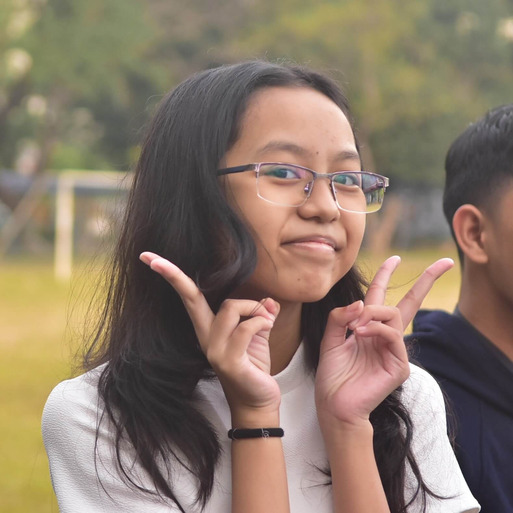
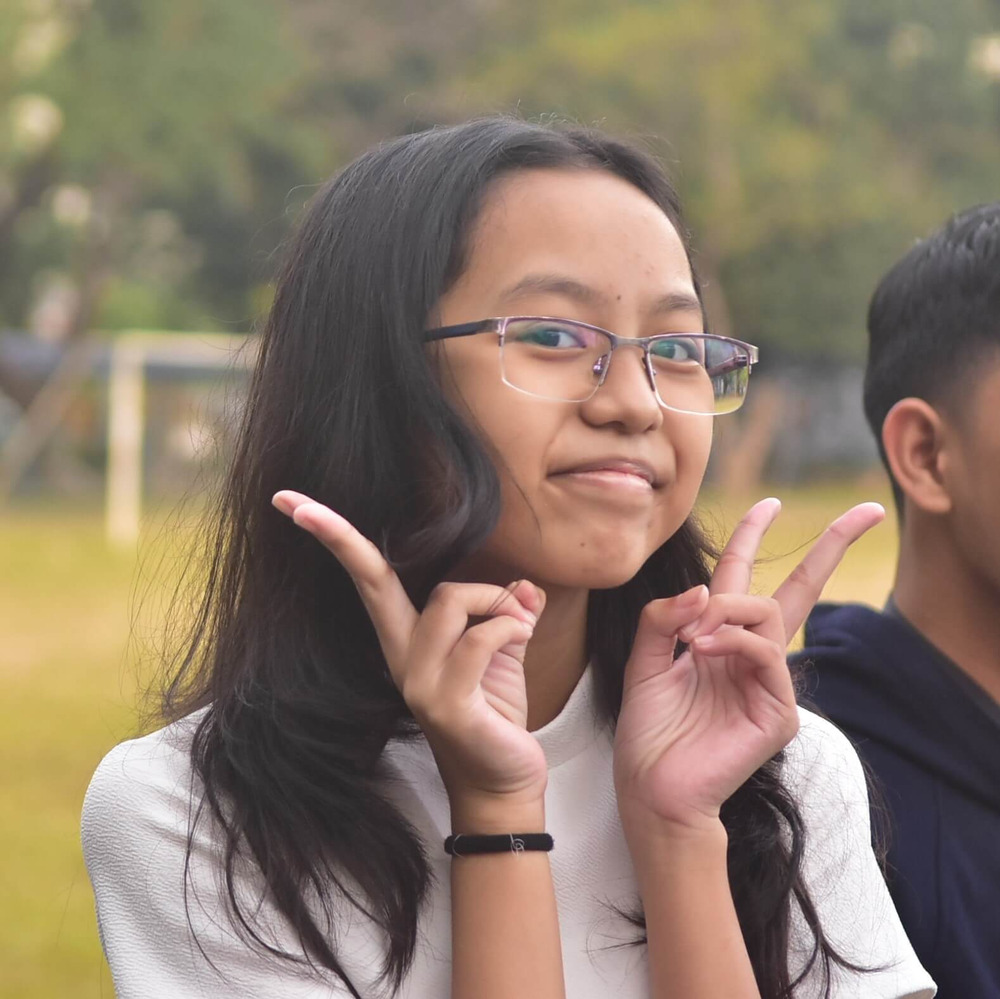

Vincent
Grade 7 Section: Topaz
Previous Class Number: S15
Current Section: Sodium
Message to a friend:
`
He used to be just one of those popular kids in grade 7 - someone I couldn't talk to, way out of my league.
But talking to him, getting to know him in grade 8... it felt so easy. He's carefree, often dealing with things
when they come, never ahead of time. He often doesn't worry about his requirements, always setting them aside.
Everyone agrees, though, that if he reviewed, he would be among the smartest in the batch - he picks up on concepts
(especially scientific ones) easily, but it isn't such a big deal to him.
Vincent's incredibly talented - he's could audition for Himig, he auditioned for Sagala, and he's in Alianti's
training pool. He's a really fun person to be around with, making any atmosphere calm and free of worry. He often
initiates galas in grade 8, always asking at any given opportunity. Like O'Neil and JP, he's like a brother to me
- one that can make me feel like nothing at all will hurt me.
I feel too lucky to even be considered one of his friends, and maybe I am. I love him like I would an imaginary older
brother, and while I do wish him to be a bit more responsible, I wouldn't mind if he stayed just the way he is.


 
